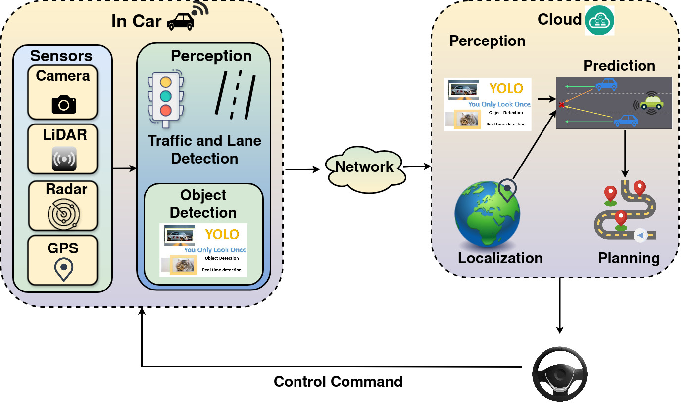

About
Hello! I'm Najiya Naj, PhD Scholar at the Department of Computer Science &
Engineering, Indraprastha Institute of Information Technology, Delhi (IIIT-D).
Under the mentorship of Dr. Arani Bhattacharya
and Dr. Debopam Bhattacherjee, my research focuses on Remote operation of vehicles over different networks.
My research explores systems and networks, focusing on wireless communication and IoT systems.
Highlights
- Jul 8-11, 2024: Submitted to the Doctoral Consortium for COMPASS 2024 and presented a poster.
- Mar 15-16, 2024: Presented my work at Research Innovation and Incubation Showcase Events (RIISE)
- Dec 18-24, 2023: Volunteered at ACM Winter School and participated in a hands-on session of Linux Networking.
Research Work
Remote Operation of Vehicles

Explores the challenges and solutions for remote vehicle operation using satellite networks, focusing on latency, bandwidth, and reliability.
Cloud-Assisted Autonomous Driving Over Wireless Networks
This research investigates the integration of cloud computing with autonomous driving, focusing on optimizing wireless network communication for real-time decision-making.
Publications
Teaching Experience
Teaching Assistant, IIIT-Delhi
- Monsoon 2024: Object Oriented Programming and Design
- Winter 2024: Mobile Computing
- Monsoon 2023: Advanced Programming
- Winter 2023: Fundamentals of Database Systems
Assistant Professor, Chandigarh University, Punjab
- Monsoon 2022: Object oriented Programming using C++
- Winter 2022: Fundamentals of Computer Programming
Contact Details
Email: najiyan@iiitd.ac.in
Postal Address:
B515, System and Networks Lab,
Department of Computer science and Engineering,
R&D Building, IIIT Delhi